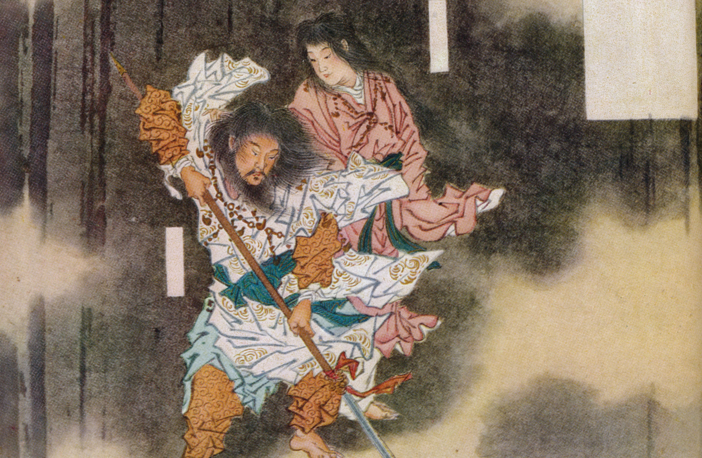
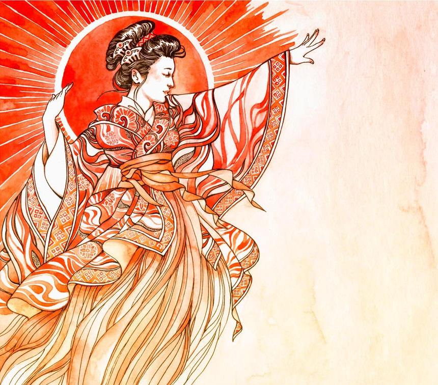
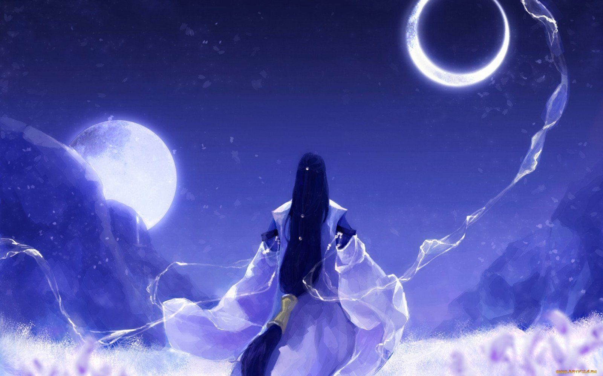
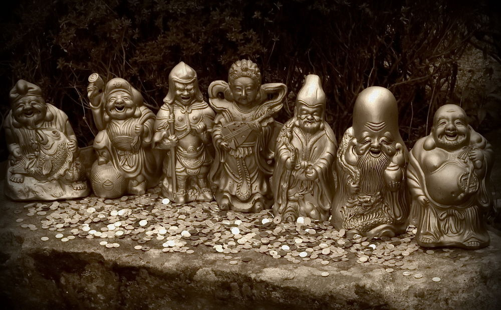

Izanagi i Izanami – rodzice bogów
Niebiańscy bogowie powierzyli Izanami i Izanagiemu zadanie kontynuowania tworzenia świata. Stojąc na moście z tęczy Bogowie zamieszali wody niebiańską włócznią, której odłamek spadł i stworzył wyspę Onogoro. Zstąpili oni na wyspę Onogoro i poddali się ceremonii zaślubin. Obeszli Niebiański Słup (łączący niebo z ziemią) Izanagi idąc w lewo, Izanami w prawo, a przy spotkaniu powitali się słowami „Ach, zaiste jakiż uroczy mężczyzna” i „Ach, zaiste jaka urocza kobieta”. Bóstwa rozpoczęły akt prokreacji, doprowadziło to do powstania 35 bóstw i 14 wysp Archipelagu Japońskiego (między innymi Honshū czy Tsushima). Bóg ognia Kagutsushi podczas narodzin spalił wnętrzności Izanami doprowadzając do jej śmierci. Izanami udała się do Krainy Ciemności Yominokuni. Izanagi w złości rozpłatał mieczem boga ognia, a z jego krwi i części ciała powstały następne bóstwa.
Amaterasu – bogini słońca
Bogini słońca Amaterasu jest córką Izanagiego, narodzoną podczas gdy ten przemywał swoje lewe oko po ucieczce z Krainy Ciemności. Została uznana za najbardziej godne dziecko i powierzono jej władzę nad Wysoką Równiną Niebios. Amaterasu sprawiedliwie panuje nad światem niebiańskich bogów. Co ciekawe, Amaterasu zajmuję najwyższą pozycję w hierarchii shintō, gdzie zgodnie z bliższymi nam wierzeniami stanowisko to zajmować powinien Amenominakanushi, jako pierwszy bóg lub Izanami i Izanagi jako twórcy świata.
Wraz ze zniknięciem Amaterasu na świecie zapanowały ciemności i złe moce. Aby zapobiec złym wypadkom inne bóstwa postanowiły przekonać ją do powrotu na zewnątrz. Pomóc miał im syn Takamimusubiego Omoikane, do którego bóstwa udały się po radę. Zgodnie z zaleceniem Omoikanego sprowadzili z Krainy Wiecznotrwałości „ptaki wywodzące długie trele” (znane nam wszystkim koguty) i posadzili je na żerdzi przed jaskinią. Od tamtej pory co rano koguty swoim pianiem wzywały do powstania słońce. Następnym krokiem było wywabienie Amaterasu z jaskini poprzez podstęp. Bóstwa zebrały odpowiednie materiały, były to klejnoty-krzywulce, spiżowe lustro, tkanina konopna i bawełniana i przystroili nimi wiecznie zielone drzewko sakaki. Urządzili zabawę przed zasuniętym głazem wejściem do jaskini. Amaterasu, która usłyszała zabawę wychyliła się ze swojej kryjówki zdziwiona, że bogowie bawią się mimo jej nieobecności i zapytała, co jest powodem ich szczęścia. Amenouzume, młoda bogini, która tańczyła nago przed jaskinią odpowiedziała jej, że jest z nimi duch bardziej czcigodny od Amaterasu. Oczywiście nie było żadnego, bardziej godnego czci bóstwa od Amaterasu. Bogowie Amenokoyane i Futodama ukazali swojej pani zwierciadło, w której odbijała się jej postać. Bóg Tajikarao korzystając z nieuwagi bogini słońca chwycił ją za dłoń i wyciągnął na zewnątrz, zaś Futodama szybko zasłonił wejście jaskini powrozem ze słomy ryżowej. Ciemności ustąpiły, słońce znów zaczęło świecić na niebie, a Amaterasu już bez przeszkód rządziła krainą bogów. Susanoo został wygnany przez inne bóstwa na ziemię.
Tsukiyomi – bóg księżyca
Posiadamy niewiele informacji na temat boga księżyca, a jego kult jest bardzo ograniczony w porównaniu z Amaterasu czy nawet Susanoo. Istnieje bowiem tylko jeden, krótki mit wspominający tego potomka Izanagiego.
Brat bogini słońca wyznaczony został przez swojego ojca na boga księżyca, opiekuna przypływów i odpływów morza. Tsukiyomi w odróżnieniu od Susanoo nigdy nie był przeciwny swojej siostrze, co więcej jedną z jego ról miała być pomoc Amaterasu. Bogini wysłała go do Ukemochi, bogini pożywienia, która ugościła go przeróżnymi potrawami, które wyjmowała z różnych części ciała. Stając odpowiednio w kierunku lądu lub morza z ust Ukemochi wysypywał się gotowany ryż lub ryby i owoce morza, zaś patrząc w stronę gór, zwierzęta lądowe. Tsukiyomi jednak uznał dary za zniewagę, gdyż zostały one przez nią zwymiotowane. W złości zabił Ukemochi mieczem. Zwłoki gospodyni zrodziły pokarm, przez konia i woła, które wybiegły z jej głowy, przez ryż, pszenicę i fasolę, po proso i kokony jedwabnika. Po całym zdarzeniu Tsukiyomi wrócił do Amaterasu i opowiedział jej wszystko, co zaszło. Siostra, rozzłoszczona zabójstwem bogini pogoniła Tsukiyomiego i kazała mu nigdy nie wracać. W ten sposób mity japońskie wyjaśniają, dlaczego słońce i księżyc nigdy nie zaświecą razem w przestworzach.
Siedmiu japońskich Shinto Bogów Szczęścia (Shichi-fukujin)
Siedmiu szczęśliwych bogów odzwierciedla wkład religii zarówno chińskiej, jak i indyjskiej.
- Ben dziesięć (Benzaiten, Bentensama) to buddyjska bogini elokwencji, tańca i muzyki, patronka gejsz, często przedstawiana w wysadzanym klejnotami diademie i trzymająca instrument strunowy. Od hinduskiej bogini Saraswati .
- Hotei (lub Budai) był kapłanem Zen i bogiem wróżbitów i barmanów. Jest przyjacielem słabych i dzieci, przedstawianym z wielkim nagim brzuchem. Jest bogiem szczęścia, śmiechu, mądrości zadowolenia i przyjaznego dobrego humoru.
- Jurojinjest wcieleniem południowego bieguna z japońskiej mitologii buddyjskiej, dawcy nieśmiertelności i boga długowieczności i osób starszych. Jeździ na jelenie i często towarzyszą mu żurawie i żółwie jako symbole długiego życia i szczęśliwej starości.
- Fukurokuju, reinkarnacja taoistyczny bóg Hsuan-wu i pustelnik z chińskiej dynastii Song jest bogiem mądrości, szczęścia, długowieczności i szczęścia. Na niektórych listach Siedmiu Szczęśliwych Bogów jest czasem zastępowany przez Kichijoten, przejęty od hinduskiej bogini Lakszmi .
- Biszamon lub Bishamonten jest bogiem fortuny w wojnach i bitwach, obrońcą tych, którzy przestrzegają zasad, od hinduskiego boga Ponieważ lub Vaisravana.
- Daikoku lub Daikokuten jest bogiem handlu i dobrobytu, patronem oszustów, rolników i bankierów
- Ebisujest tradycyjnym japońskim bogiem szczęścia, niezwiązanym z innymi religiami, rybaków, dobrobytu i bogactwa w biznesie, uprawach i żywności.